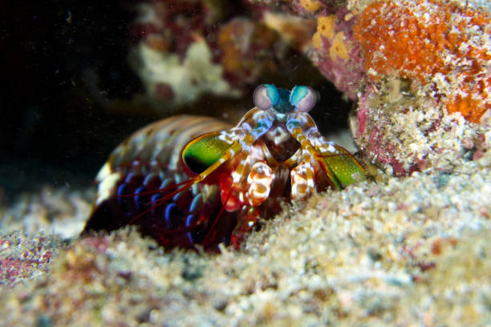
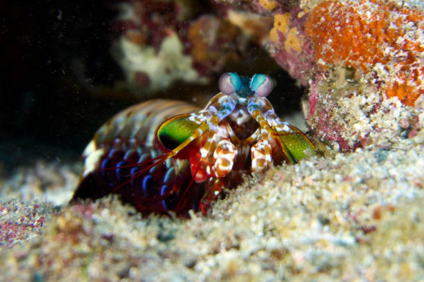

Você já pensou como a visão dos animais é semelhante a visão humana? Pois bem.
Na natureza existem animais com a visão bem diferente do que conhecemos. Um desses é o que vamos mostrar hoje.
Conhecido no Brasil como Tamarutacas ou Lacraias-do-mar, de nome cientifíco Stomatopoda esse animal tem o aproxidamente
16 tipos de células fotorreceptoras, que captam outras variações de cores que o olho humano não consegue enxergar como o ultravioleta

 
